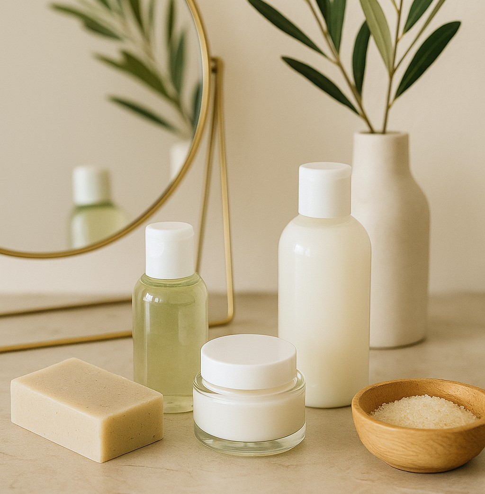

Cuidado Natural para tu Piel: 4 Tips para una Rutina Artesanal y Consciente
Publicado el 26 de Agosto, 2025
Tu piel es el órgano más grande de tu cuerpo y también uno de los más sensibles. Cuidarla no solo tiene que ver con belleza, sino con bienestar. En Velas Starlight creemos en rutinas simples, naturales y conscientes que nutren tu piel sin saturarla. Aquí te compartimos 4 tips esenciales para incorporar el autocuidado a tu día.
1. Menos es más
Evita sobrecargar tu piel con muchos productos. Una limpieza suave, una buena hidratación y protección solar son la base. Usa jabones artesanales con aceites naturales y sin sulfatos para mantener el equilibrio.
2. Hidrata desde adentro (y por fuera)
Beber agua es vital, pero también lo es usar cremas o aceites corporales con ingredientes humectantes como manteca de karité, aceite de almendras o aloe vera. Elige texturas ligeras por la mañana y más densas por la noche.
3. Exfolia con cariño
Una vez por semana, exfolia tu piel con productos suaves a base de azúcar, café o avena. Ayudarás a eliminar células muertas y permitirás que los activos penetren mejor.
4. Crea un momento para ti
Convierte tu rutina de cuidado en un ritual. Enciende una vela, pon música relajante y tómate esos 10 minutos como una cita contigo mismo. El autocuidado también es emocional.
Cierre:
No necesitas una rutina de 10 pasos ni los productos más costosos. Solo necesitas tiempo, conciencia y productos honestos. En Velas Starlight creemos que el cuidado empieza desde adentro... y se nota por fuera.